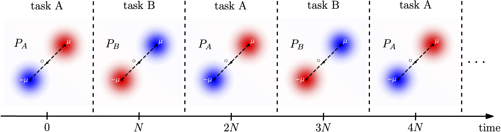

# Beyond IID:<br>Out of Distribution & <br>Prospective Learning <br> Joshua T. Vogelstein <br> <!-- , [JHU](https://www.jhu.edu/) <br> --> <!-- Co-PI: Vova Braverman, [JHU](https://www.jhu.edu/) <br> --> Ashwin de Silva, Rahul Ramesh, Pratik Chaudhari, Carey E. Priebe, Timothy Verstynen, Konrad Kording <!-- | Joshua T. Vogelstein <br> --> <!-- [Microsoft Research](https://www.microsoft.com/en-us/research/): Weiwei Yang | Jonathan Larson | Bryan Tower | Chris White --> <img src="images/neurodata_blue.png" width="40%" style="vertical-align: top" "horizontal-align: middle"> <!-- <img src="images/jhu.png" width="8%" style="vertical-align: top"> --> --- ### Outline - Out of Distribution (OoD) Learning - Prospective Learning --- ## What is learning? <img src="images/glivenko-cantelli-33.png" width="1000"> <img src="images/GV2.png" width="1000"> --- ## A more modern definition - Assume $(X\_i,Y\_i) \sim^{iid} F, \quad i \in [n]$ - Let $L((X_i,Y_i)^n) \rightarrow h_n$ - Let $R$ denote risk, eg, expected loss - Let $R^*$ be Bayes optimal risk - Let $\delta, \epsilon > 0$ - $L$ learns iff $\, \exists N$ s.t. $\forall n > N$ $$\mathbb{P}[ R(h\_n) - R^* < \epsilon ] \geq 1 - \delta$$ - GC thm: error gets smaller as $n$ increases - implication: if your AI is doing ok, just get more data! --- ## So learning is solved? - No. --- ## What is OoD Learning? - Assume $(X\_i,Y\_i) \sim^{iid} F, \quad i \in [n]$ - Let $L((X_i,Y_i)^n) \rightarrow h_n$ - Let $R$ denote risk, eg, expected loss wrt $F' \neq F$ - Let $R^*$ be Bayes optimal risk wrt $F' \neq F$ - Let $\delta, \epsilon > 0$ - $L$ OoD learns from $F$ about $F'$ iff $\, \exists N$ s.t. $\forall n > N$ $$\mathbb{P}\_F[ R(h\_n) - R^* < \epsilon ] \geq 1 - \delta$$ - Question: does more data from $F$ help? .footnote[.small[De Silva, et al., The Value of OoD Data. ICML, 2023]] --- ## Let's take a poll Let $E=\mathbb{E}\_F[ R(h\_n) - R^*]$ be generalization error on $F'$ with training data from $F$ Who thinks more data from $F$ -- 1. reduces E -- 2. increases E -- 3. depends on the relationship between $F$ and $F'$ --- ## Let's see: the simplest example - $F$ is two gaussians - $F'$ is two gaussians shifted by $\Delta$ <!-- <img src="https://github.com/neurodata/ood-tl/blob/main/reports/figures/gausstask_fig.png?raw=true" width="700"> --> <img src="images/ood-1-summary-plot-a.png" width="500"> <!--  --> --- ## More data from $F$ can first improve, <br>and then degrade E <!-- <img src="https://github.com/neurodata/ood-tl/blob/main/reports/figures/gaussian_task_analytical_plot.svg?raw=true" width="1000"> --> <img src="images/ood-1-summary-plot-b.png" width="500"> - For a fixed $\Delta$, error can be non-monotonic wrt OoD sample size $m$ - implications: just because a little OoD data helps, does not mean that more won't hurt! .footnote[.small[De Silva, et al., The Value of OoD Data. ICML, 2023]] --- ## A Bias/Variance Explanation <img src="images/2-bias-var-breakdown-plot.png" width="1000"> --- ## Some synthetic image data examples --- ## Summary so far - OoD learning is different in kind from in-distribution learning - More data is not necessarily adequate to get arbitrary performance - More data can actually hurt - Time to think carefully about how much data of different kinds to use, and how to combine datasets, rather than throwing everything in a bucket --- ## What about time? - $L$ OoD learns from $F$ about $F'$ iff $\, \exists N$ s.t. $\forall n > N$ $$\mathbb{P}\_F[ R(h\_n) - R^* < \epsilon ] \geq 1 - \delta$$ Does not include time. Let's revisit learning frameworks --- ## Learning Frameworks - "Classical" PAC Learning: best case scenario, $F\_{future} = F\_{past}$ - Online Learning: worst case scenario: future F could be adversarial In both cases, the "best" thing to do is whatever would have worked best in the past. --- ## Fancy Learning Frameworks - OoD PAC Learning: $F\_{future} \neq F\_{past}$ - Online meta-learning: $F\_{future} \sim iid G$ - Continual learning: $F\_{future} \sim iid G$, with bias towards previously sampled F's In all these cases, still no ability to predict $F\_{future}$ at all. But what about when one can predict future F's somewhat? --- Learning evolved because it improves future performance in a partially predictable dynamic world --- ## Consider the following sequence of tasks  --- ## Online SGD & FTL Fail <img src="images/online_seq1.png" width="1400"> -- - Online Meta & Continual would do better, but never get to zero error - Because none of these frameworks *prospect* --- ## Can we formalize the notion of prospection? --- .small[ ### Publications 1. A. Geisa et al. [Towards a theory of out-of-distribution learning](https://arxiv.org/abs/2109.14501), arXiv, 2021. 1. J. T. Vogelstein et al. [Representation Ensembling for Synergistic Lifelong Learning with Quasilinear Complexity](https://arxiv.org/abs/2004.12908), arXiv, 2022. 1. H. Xu et al. [Simplest Streaming Trees](https://arxiv.org/abs/2110.08483), arXiv, 2022. 1. J. Dey et al. [Out-of-distribution and in-distribution posterior calibration using Kernel Density Polytopes](https://arxiv.org/abs/2201.13001), arXiv, 2022. 1. C. E. Priebe et al. [Modern Machine Learning: Partition and Vote](https://doi.org/10.1101/2020.04.29.068460), 2020. 1. R. Guo, et al. [Estimating Information-Theoretic Quantities with Uncertainty Forests](https://arxiv.org/abs/1907.00325). arXiv, 2019. 1. R. Perry, et al. [Manifold Forests: Closing the Gap on Neural Networks](https://openreview.net/forum?id=B1xewR4KvH). arXiv, 2019. 1. C. Shen and J. T. Vogelstein. [Decision Forests Induce Characteristic Kernels](https://arxiv.org/abs/1812.00029). arXiv, 2019. 1. M. Madhya, et al. [Geodesic Learning via Unsupervised Decision Forests](https://arxiv.org/abs/1907.02844). arXiv, 2019. 1. M. Madhya, et al. [PACSET (Packed Serialized Trees): Reducing Inference Latency for Tree Ensemble Deployment](https://arxiv.org/abs/2011.05383). arXiv, 2020. <!-- ### Conferences --> 1. J. T. Vogelstein et al. A biological implementation of lifelong learning in the pursuit of artificial general intelligence. NAISys, 2020. 2. B. Pedigo et al. A quantitative comparison of a complete connectome to artificial intelligence architectures. NAISys, 2020. 3. L. Haoran, et al. [Lifelong Learning with Sketched Structural Regularization](https://arxiv.org/abs/2104.08604). ACML, 2021. ] --- #### Acknowledgements <!-- <div class="small-container"> <img src="faces/ebridge.jpg"/> <div class="centered">Eric Bridgeford</div> </div> <div class="small-container"> <img src="faces/pedigo.jpg"/> <div class="centered">Ben Pedigo</div> </div> <div class="small-container"> <img src="faces/jaewon.jpg"/> <div class="centered">Jaewon Chung</div> </div> --> <div class="small-container"> <img src="faces/yummy.jpg"/> <div class="centered">yummy</div> </div> <div class="small-container"> <img src="faces/lion.jpg"/> <div class="centered">lion</div> </div> <div class="small-container"> <img src="faces/owl.png"/> <div class="centered">owl</div> </div> <div class="small-container"> <img src="faces/braven_hawk.png"/> <div class="centered">braven hawk</div> </div> <div class="small-container"> <img src="faces/family.jpg"/> <div class="centered">family</div> </div> <div class="small-container"> <img src="faces/earth.jpg"/> <div class="centered">earth</div> </div> <div class="small-container"> <img src="faces/milkyway.jpg"/> <div class="centered">milkyway</div> </div> ##### JHU <div class="small-container"> <img src="faces/cep.png"/> <div class="centered">Carey Priebe</div> </div> <img src="images/neurodata2023.jpg" width="500"> <!-- <div class="small-container"> <img src="faces/vova_lab/Vova.JPG"/> <div class="centered">Vova Braverman</div> </div> --> <!-- <div class="small-container"> <img src="faces/randal.jpg"/> <div class="centered">Randal Burns</div> </div> --> <!-- <div class="small-container"> <img src="faces/cshen.jpg"/> <div class="centered">Cencheng Shen</div> </div> --> <!-- <div class="small-container"> <img src="faces/bruce_rosen.jpg"/> <div class="centered">Bruce Rosen</div> </div> <div class="small-container"> <img src="faces/kent.jpg"/> <div class="centered">Kent Kiehl</div> </div> --> <!-- <div class="small-container"> <img src="faces/mim.jpg"/> <div class="centered">Michael Miller</div> </div> <div class="small-container"> <img src="faces/dtward.jpg"/> <div class="centered">Daniel Tward</div> </div> --> <!-- <div class="small-container"> <img src="faces/vikram.jpg"/> <div class="centered">Vikram Chandrashekhar</div> </div> <div class="small-container"> <img src="faces/drishti.jpg"/> <div class="centered">Drishti Mannan</div> </div> --> <!-- <div class="small-container"> <img src="faces/jesse.jpg"/> <div class="centered">Jesse Patsolic</div> </div> --> <!-- <div class="small-container"> <img src="faces/falk_ben.jpg"/> <div class="centered">Benjamin Falk</div> </div> --> <!-- <div class="small-container"> <img src="faces/kwame.jpg"/> <div class="centered">Kwame Kutten</div> </div> --> <!-- <div class="small-container"> <img src="faces/perlman.jpg"/> <div class="centered">Eric Perlman</div> </div> --> <!-- <div class="small-container"> <img src="faces/loftus.jpg"/> <div class="centered">Alex Loftus</div> </div> --> <!-- <div class="small-container"> <img src="faces/bcaffo.jpg"/> <div class="centered">Brian Caffo</div> </div> --> <!-- <div class="small-container"> <img src="faces/minh.jpg"/> <div class="centered">Minh Tang</div> </div> --> <!-- <div class="small-container"> <img src="faces/avanti.jpg"/> <div class="centered">Avanti Athreya</div> </div> --> <!-- <div class="small-container"> <img src="faces/vince.jpg"/> <div class="centered">Vince Lyzinski</div> </div> --> <!-- <div class="small-container"> <img src="faces/dpmcsuss.jpg"/> <div class="centered">Daniel Sussman</div> </div> --> <!-- <div class="small-container"> <img src="faces/youngser.jpg"/> <div class="centered">Youngser Park</div> </div> --> <!-- <div class="small-container"> <img src="faces/shangsi.jpg"/> <div class="centered">Shangsi Wang</div> </div> --> <!-- <div class="small-container"> <img src="faces/tyler.jpg"/> <div class="centered">Tyler Tomita</div> </div> --> <!-- <div class="small-container"> <img src="faces/james.jpg"/> <div class="centered">James Brown</div> </div> --> <!-- <div class="small-container"> <img src="faces/disa.jpg"/> <div class="centered">Disa Mhembere</div> </div> --> <!-- <div class="small-container"> <img src="faces/gkiar.jpg"/> <div class="centered">Greg Kiar</div> </div> --> <!-- <div class="small-container"> <img src="faces/jeremias.png"/> <div class="centered">Jeremias Sulam</div> </div> --> <!-- <div class="small-container"> <img src="faces/meghana.png"/> <div class="centered">Meghana Madhya</div> </div> --> <!-- <div class="small-container"> <img src="faces/percy.png"/> <div class="centered">Percy Li</div> </div> --> <!-- <div class="small-container"> <img src="faces/hayden.png"/> <div class="centered">Hayden Helm</div> </div> --> <!-- <div class="small-container"> <img src="faces/rguo.jpg"/> <div class="centered">Richard Gou</div> </div> <div class="small-container"> <img src="faces/ronak.jpg"/> <div class="centered">Ronak Mehta</div> </div> <div class="small-container"> <img src="faces/jayanta.jpg"/> <div class="centered">Jayanta Dey</div> </div> <div class="small-container"> <img src="faces/will.jpg"/> <div class="centered">Will LeVine</div> </div> <div class="small-container"> <img src="faces/hao.jpg"/> <div class="centered">Haoyin Xu</div> </div> <div class="small-container"> <img src="faces/nhahn.jpg"/> <div class="centered">Nick Hahn</div> </div> <div class="small-container"> <img src="faces/vova_lab/Haoran.JPG"/> <div class="centered">Haoran Li</div> </div> <div class="small-container"> <img src="faces/vova_lab/Aditya.jpeg"/> <div class="centered">Aditya Krishnan</div> </div> <div class="small-container"> <img src="faces/vova_lab/Jingfeng.jpg"/> <div class="centered">Jingfeng Wu</div> </div> --> <!-- ##### HRL & Microsoft Research <div class="small-container"> <img src="faces/vova_lab/Soheil.PNG"/> <div class="centered">Soheil Kolouri</div> </div> <div class="small-container"> <img src="faces/vova_lab/Praveen.JPG"/> <div class="centered">Praveen K. Pilly</div> </div> --> <!-- ##### Microsoft Research --> <!-- <div class="small-container"> <img src="faces/chwh-180x180.jpg"/> <div class="centered">Chris White</div> </div> <div class="small-container"> <img src="faces/weiwei.jpg"/> <div class="centered">Weiwei Yang</div> </div> <div class="small-container"> <img src="faces/jolarso150px.png"/> <div class="centered">Jonathan Larson</div> </div> <div class="small-container"> <img src="faces/brtower-180x180.jpg"/> <div class="centered">Bryan Tower</div> </div> --> ##### NSF Simons MoDL <!-- Hava, Ben, Robert, Jennifer, Ted. --> <!-- {[BME](https://www.bme.jhu.edu/),[CIS](http://cis.jhu.edu/), [ICM](https://icm.jhu.edu/), [KNDI](http://kavlijhu.org/)}@[JHU](https://www.jhu.edu/) | [neurodata](https://neurodata.io) --> <!-- <br> --> <!-- [jovo@jhu.edu](mailto:j1c@jhu.edu) | <http://neurodata.io/talks> | [@neuro_data](https://twitter.com/neuro_data) --> </div> <!-- <img src="images/funding/nsf_fpo.png" STYLE="HEIGHT:95px;"/> --> <!-- <img src="images/funding/nih_fpo.png" STYLE="HEIGHT:95px;"/> --> <!-- <img src="images/funding/darpa_fpo.png" STYLE=" HEIGHT:95px;"/> --> <!-- <img src="images/funding/iarpa_fpo.jpg" STYLE="HEIGHT:95px;"/> --> <!-- <img src="images/funding/KAVLI.jpg" STYLE="HEIGHT:95px;"/> --> <!-- <img src="images/funding/schmidt.jpg" STYLE="HEIGHT:95px;"/> --> --- background-image: url(images/l_and_v.jpeg) .footnote[Questions?] --- class: middle # .center[Appendix]